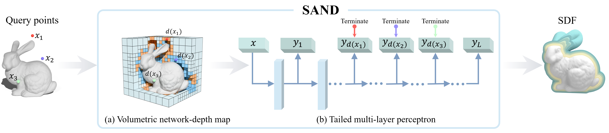
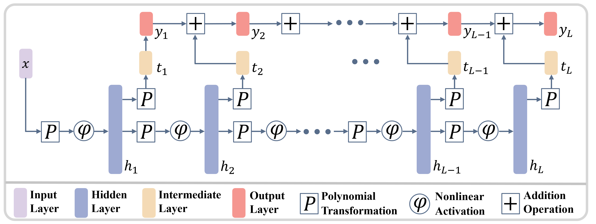
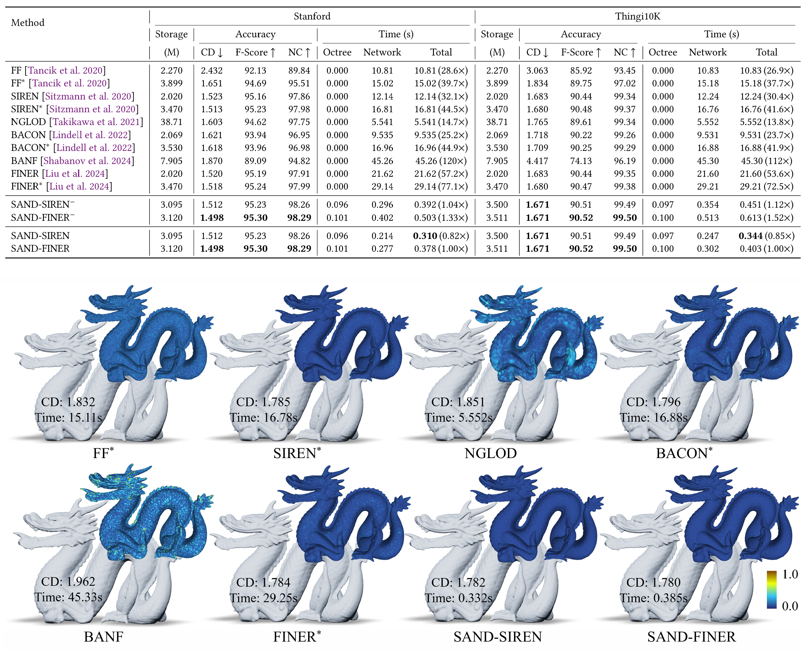
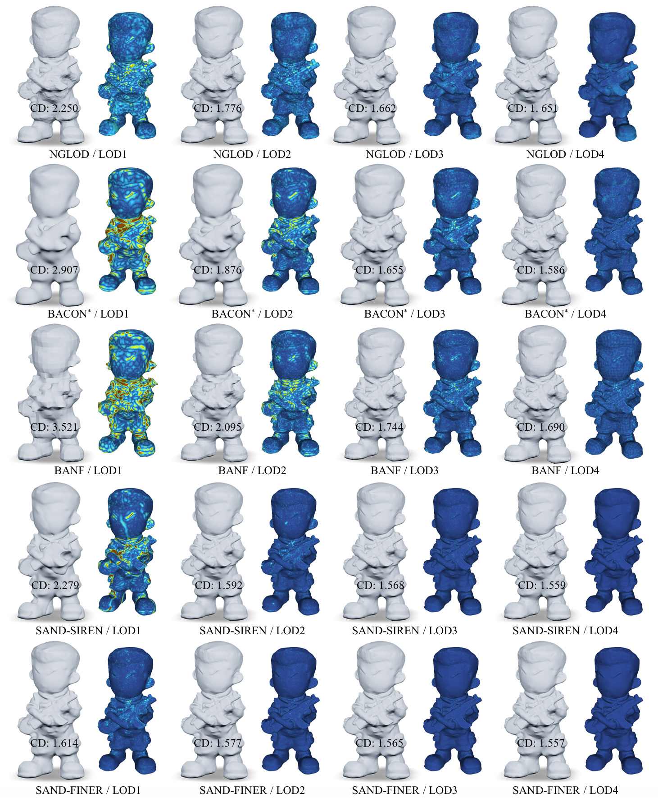

Implicit neural representations are powerful for geometric modeling, but their practical use is often limited by the high computational cost of network evaluations. We observe that implicit representations require progressively lower accuracy as query points move farther from the target surface, and that even within the same iso-surface, representation difficulty varies spatially with local geometric complexity. However, conventional neural implicit models evaluate all query points with the same network depth and computational cost, ignoring this spatial variation and thereby incurring substantial computational waste.
Motivated by this observation, we propose an efficient neural implicit geometry representation framework with spatially adaptive network depth (SAND). SAND leverages a volumetric network-depth map together with a tailed multi-layer perceptron (T-MLP) to model implicit representation. The volumetric depth map records, for each spatial region, the network depth required to achieve sufficient accuracy, while the T-MLP is a modified MLP designed to learn implicit functions such as signed distance functions, where an output branch, referred to as a tail, is attached to each hidden layer. This design allows network evaluation to terminate adaptively without traversing the full network and directs computational resources to geometrically important and complex regions, improving efficiency while preserving high-fidelity representations. Extensive experimental results demonstrate that our approach can significantly improve the inference-time query speed of implicit neural representations.

SAND consists of two main components: a volumetric network-depth map and a tailed multi-layer perceptron (T-MLP). The volumetric depth map records the network depth required for each spatial region to achieve sufficient accuracy when evaluating the implicit function. The T-MLP is a modified MLP with intermediate output branches, or tails, enabling valid predictions at any depth.
During training, we first train the T-MLP to learn the implicit function. Once the T-MLP is trained, we compute the required network depth for each point according to the outputs of T-MLP. These depth values are then stored in the volumetric network-depth map for subsequent inference.
During inference, each query point first retrieves its target evaluation depth from the volumetric map, and the T-MLP is then executed only up to the corresponding depth to output implicit function values
To enable early termination at any network depth, we propose the tailed multi-layer perceptron (T-MLP). Built on a standard MLP, the T-MLP attaches an output branch, also called a tail, after each hidden layer. The first tail produces a coarse approximation of the target function. The second tail learns the residual between the target and the first tail’s output. The third tail captures the residual between the target and the cumulative output of the first two tails. In general, the k-th tail models the residual between the target function and the sum of the outputs from the first k−1 tails.

To allocate computation according to local geometric complexity, we introduce the volumetric network-depth map, which assigns an appropriate network depth to each spatial region. Regions with simple geometry can be represented using shallow network evaluations, while regions containing fine geometric details are assigned deeper evaluations for higher representational capacity. During inference, query points are first associated with their corresponding depth values through the volumetric map, which then determines the adaptive termination depth of the T-MLP.


@article{yang2026sand,
title={SAND: Spatially Adaptive Network Depth for Fast Sampling of Neural Implicit Surfaces},
author={Yang, Chuanxiang and Hou, Junhui and Liu, Yuan and Ren, Siyu and Wei, Guangshun and Komura, Taku and Zhou, Yuanfeng and Wang, Wenping},
journal={arXiv preprint arXiv:2604.25936},
year={2026}
}